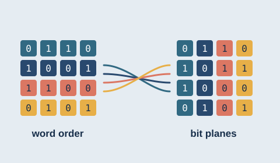
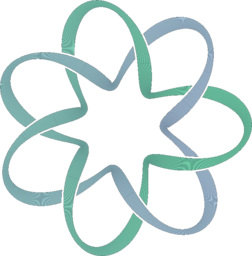
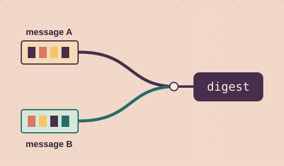
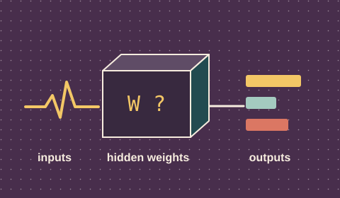

Fixslicing for GIFT and AES
RustCrypto uses fixslicing in its portable, constant-time AES backend. The technique began with GIFT and was later adapted to AES.
Professor at NTU Singapore
I lead SyLLab, where we design symmetric ciphers, study the security of neural networks, and build compact models whose decisions can be explained and verified.

I founded Implicant to bring interpretable models and privacy-preserving inference into practice.
Describe a symmetric primitive once. Reuse the same model to visualize its structure, automate cryptanalysis, and generate implementations.


RustCrypto uses fixslicing in its portable, constant-time AES backend. The technique began with GIFT and was later adapted to AES.

Our work on full SHA-1 spans a freestart collision and the first practical chosen-prefix collision.

Block ciphers, authenticated encryption and hash functions for constrained devices.

What can a model’s outputs reveal about its weights? How do adversarial inputs change its predictions?

TTnet represents neural computation with small truth tables. TT-Sparse learns sparse rule models that can be inspected directly.